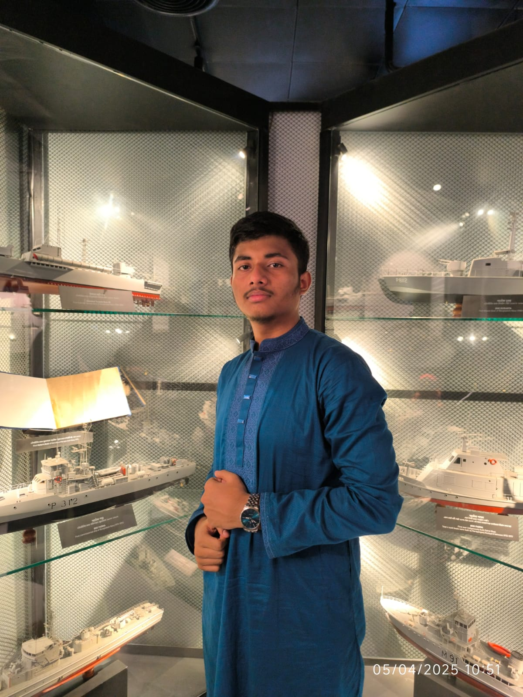

Knowledge never ends, and every new lesson lights the path forward. Exploring the depth of Islam brings both peace and strength. Challenges are not failures—they shape resilience, and every experience deepens thought and feeling. Life is a constant journey, where learning and growth never stop.
Islam is a faith that emphasizes peace, compassion, and knowledge. Being a Muslim means striving for balance between spiritual growth and worldly responsibilities. It teaches respect for others and encourages a life of integrity and purpose. Through the guidance of Quran and Hadith, one learns the values of patience, justice, and humility in daily life, shaping a meaningful personal journey.
Every individual impacts the society they live in. By contributing positively, through knowledge, understanding, and ethical conduct, one builds stronger communities. Social responsibility is essential, and reflecting on history and current events helps create solutions for collective growth. I aim to learn, act wisely, and inspire others through example, promoting harmony and development within my surroundings.